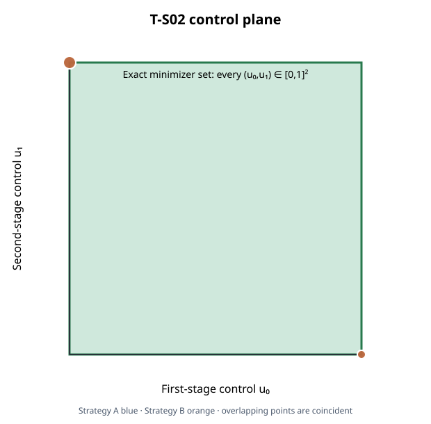

This functional capture uses the two-stage scalar integrator x₀=0, xₜ₊₁=xₜ+uₜ, uₜ∈[0,1], with constant objective J=3. Thus every feasible control pair in the unit square is an exact minimizer; this deliberately simple case checks strategy-family plumbing and witness replay, not optimization difficulty.

One excluded warmup pair and five measured alternating pairs; all 12 trials passed. Each trial marked the profile-specific family complete and returned two distinct histories. Independent original-model numerical checks passed for bindings, feasibility, and objective (both original and recomputed costs equal 3). Separate optimality and optimizer-completeness proof fields remain unsupported.
| Strategy | Median end-to-end (ms) | Range (ms) |
|---|---|---|
| Reach-back (Strategy A) | 7.419301 | 6.442703–14.480593 |
| Strategy B | 2.046087 | 1.325808–2.125428 |
Timing covers strategy preparation through two original-problem witness checks. It excludes process startup, shared setup, serialization, build, and rendering. This tiny constant-objective case is not evidence for a general performance winner.
Each of the 12 strategy attempts ran in its own Linux cgroup-v2 process scope with a 300-second process-tree watchdog, 8 GiB memory cap, no swap, 100% CPU quota, and one pinned logical CPU. The sum of attempt scope wall times was 0.141024 s; the largest observed process-tree memory peak was 12214272 bytes. Every attempt completed without timeout or memory-limit events. A separate excluded warmup pair records limiter enforcement for both strategies.
Binary source revision af4aa5cec4c8a9673460da63475698c2bd76a92a is linked to the configured CMake metadata, object digest, and executable SHA-256 in the retained build note. Source commit, build configuration, compiler, executable and scenario hashes are recorded in the capture environment; the executable is identified by SHA-256 dc57e3c16c5b1c356cd86762105f86a913a61c7a60cc6855c86bad083ac86e5e.
af4aa5cec4c8a9673460da63475698c2bd76a92ab9bb051c52b6763ceee7a6f7f423fbefd94bea86a0045693b6627a0a0da69ab9ec0beb321e6acd18aa0f929e77309250ce0bff80da22ea165e8fa2dff06aa262This is a limited T-S02 functional comparison slice for #597. It does not complete the broader MPC-01 matrix, external solver comparison, default per-attempt limiter profile, or general ranking.